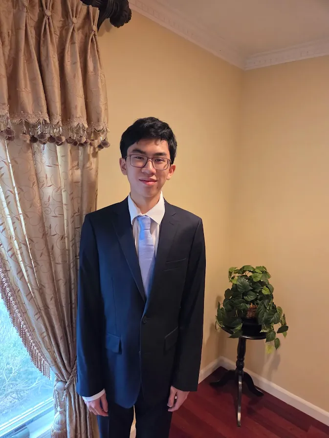

My name is Alexander Lin. I'm a current senior at High Technology High School in Lincroft, New Jersey.
In my free time, I like playing chess (99th in the US for my age as of 2026). I also like playing the piano. Some pieces I'm curerntly playing include:
Email me at alexanderlin@ctemc.org
Well, there really is no purpose. This website isn't even coded by me, but by my seatmate, Anabelle. I keep leaving class and leave my laptop behind, so she wanted to make a website so here we are.
The plan is to continue adding to this website every Latin class that I (Alex) leaves. Continuing until the day we graduate.
P.S. This page was made by my wonderful friend Anabelle Ahteck.